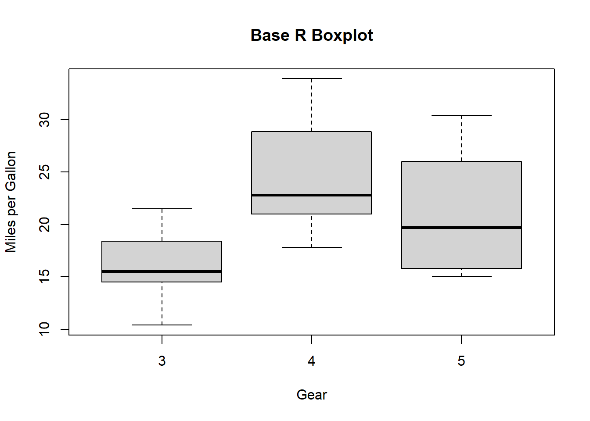
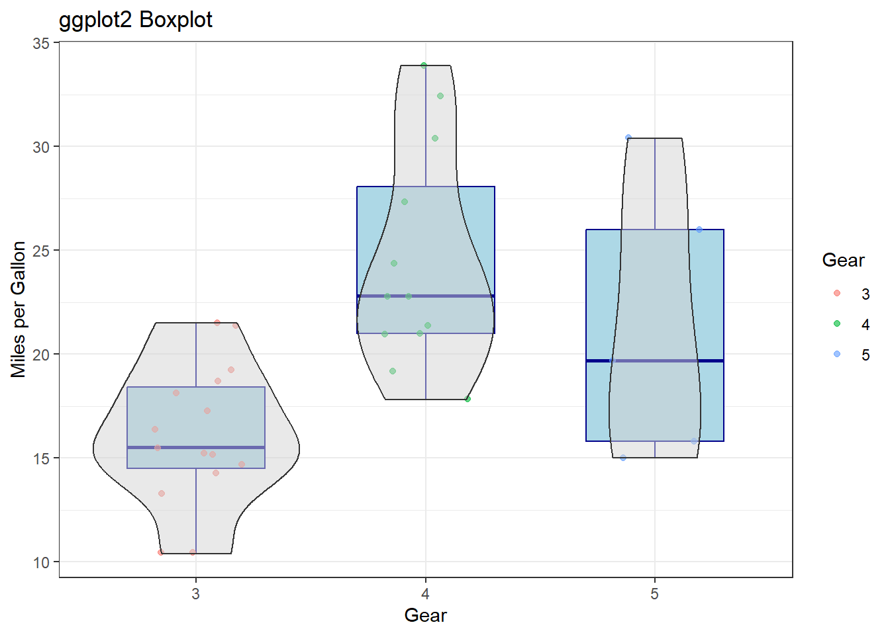
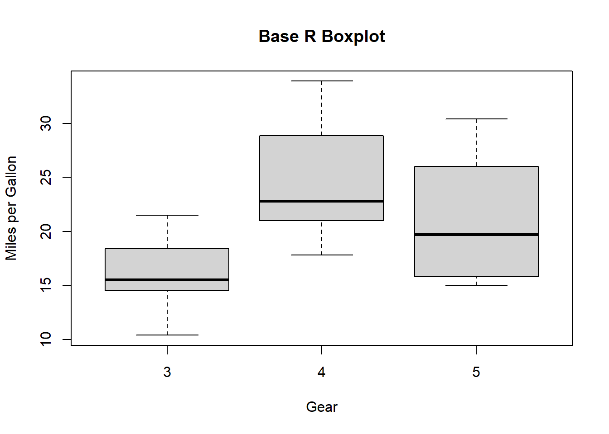
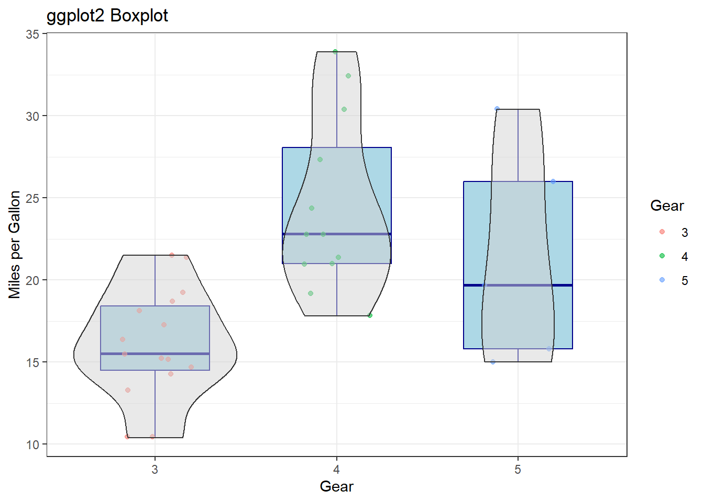
Make sure you have R version 4.3.0+ and RStudio installed.
version$version.string[1] "R version 4.4.1 (2024-06-14 ucrt)"Install tidyverse and palmerpenguins if you haven’t done so:
install.packages("tidyverse")
install.packages("palmerpenguins")
You only need to install a package once, but you need to load it every time you start a new session. Load tidyverse and palmerpenguins:
library(tidyverse)── Attaching core tidyverse packages ──────────────────────── tidyverse 2.0.0 ──
✔ dplyr 1.1.4 ✔ readr 2.1.5
✔ forcats 1.0.0 ✔ stringr 1.5.1
✔ lubridate 1.9.3 ✔ tibble 3.2.1
✔ purrr 1.0.2 ✔ tidyr 1.3.1
── Conflicts ────────────────────────────────────────── tidyverse_conflicts() ──
✖ dplyr::filter() masks stats::filter()
✖ dplyr::lag() masks stats::lag()
ℹ Use the conflicted package (<http://conflicted.r-lib.org/>) to force all conflicts to become errorslibrary(palmerpenguins) # will use the data setWarning: package 'palmerpenguins' was built under R version 4.4.3
Our ultimate goal in this workshop is to recreate the following visualization displaying the relationship between flipper lengths and bill lengths of penguins, taking into consideration the species of the penguin.
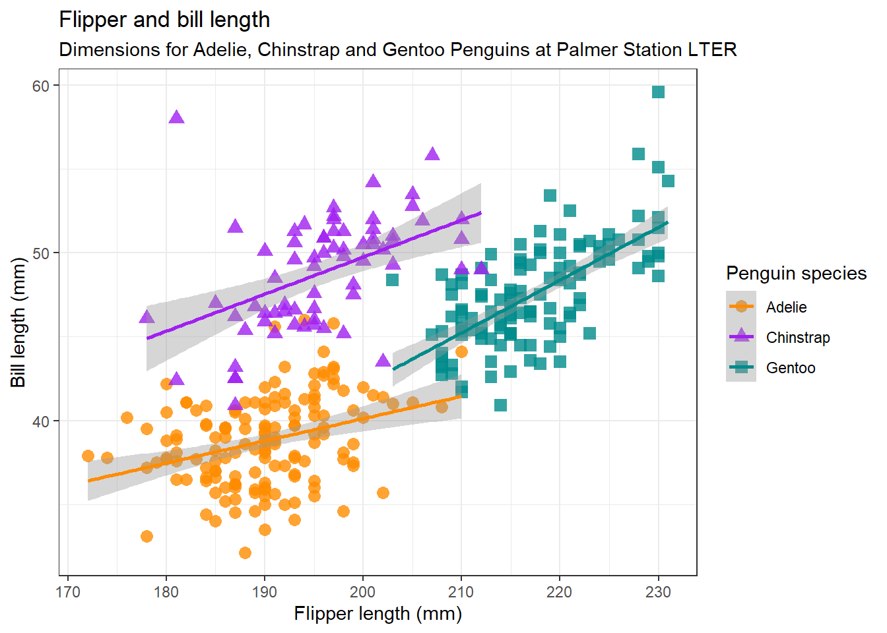
The palmerpenguins data contains size measurements for three penguin species observed on three islands in the Palmer Archipelago, Antarctica.


penguins# A tibble: 344 × 8
species island bill_length_mm bill_depth_mm flipper_length_mm body_mass_g
<fct> <fct> <dbl> <dbl> <int> <int>
1 Adelie Torgersen 39.1 18.7 181 3750
2 Adelie Torgersen 39.5 17.4 186 3800
3 Adelie Torgersen 40.3 18 195 3250
4 Adelie Torgersen NA NA NA NA
5 Adelie Torgersen 36.7 19.3 193 3450
6 Adelie Torgersen 39.3 20.6 190 3650
7 Adelie Torgersen 38.9 17.8 181 3625
8 Adelie Torgersen 39.2 19.6 195 4675
9 Adelie Torgersen 34.1 18.1 193 3475
10 Adelie Torgersen 42 20.2 190 4250
# ℹ 334 more rows
# ℹ 2 more variables: sex <fct>, year <int>Let’s glimpse the columns:
glimpse(penguins)Rows: 344
Columns: 8
$ species <fct> Adelie, Adelie, Adelie, Adelie, Adelie, Adelie, Adel…
$ island <fct> Torgersen, Torgersen, Torgersen, Torgersen, Torgerse…
$ bill_length_mm <dbl> 39.1, 39.5, 40.3, NA, 36.7, 39.3, 38.9, 39.2, 34.1, …
$ bill_depth_mm <dbl> 18.7, 17.4, 18.0, NA, 19.3, 20.6, 17.8, 19.6, 18.1, …
$ flipper_length_mm <int> 181, 186, 195, NA, 193, 190, 181, 195, 193, 190, 186…
$ body_mass_g <int> 3750, 3800, 3250, NA, 3450, 3650, 3625, 4675, 3475, …
$ sex <fct> male, female, female, NA, female, male, female, male…
$ year <int> 2007, 2007, 2007, 2007, 2007, 2007, 2007, 2007, 2007…Among the variables in penguins are:
species: a factor denoting penguin species (Adelie, Chinstrap, or Gentoo)
bill_length_mm: a number denoting bill length (millimeters)
flipper_length_mm: an integer denoting flipper length (millimeters)
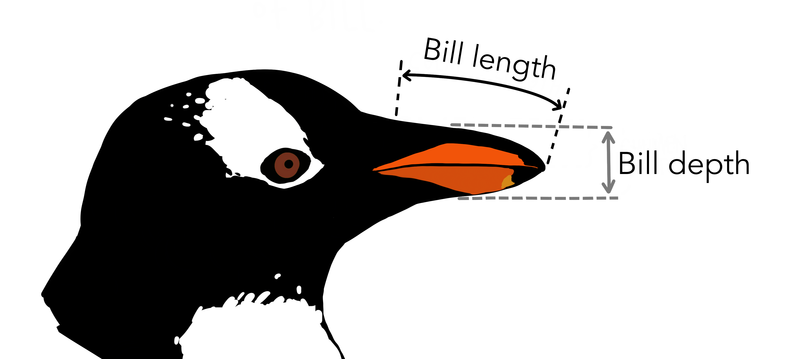
To learn more about penguins, open its help page by running ?penguins.
ggplot2 is a package in the tidyverse family. The “gg” in the name means “grammar of graphics” – a scheme for data visualization which breaks up graphs into semantic components. Since we have loaded tidyverse, we don’t need to load ggplot2 again.
Let’s begin a plot with the function ggplot(), defining a plot object that we then add layers to. The first argument of ggplot() is the dataset to use in the graph and so ggplot(data = penguins) creates an empty graph that is primed to display the penguin data. We create an empty canvas that we’ll paint the remaining layers of the plot onto.
ggplot(data = penguins)
Next, we need to tell ggplot() how the information from our data will be visuallyv represented. The mapping argument of the ggplot() function defines how variables in the dataset are mapped to visual properties (aesthetics) of the plot.
ggplot(
data = penguins,
mapping = aes(x = flipper_length_mm, y = bill_length_mm)
)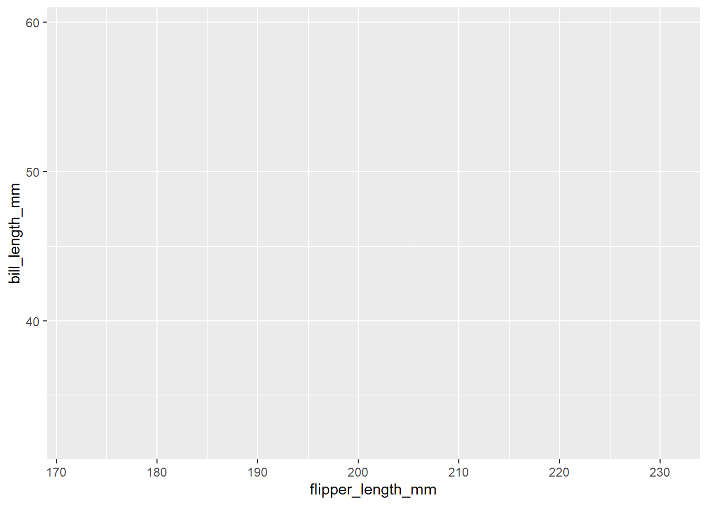
But where are the penguins??? We have not yet articulated, in our code, how to represent the observations from our data frame on our plot.
To do so, we need to define a geom: the geometrical object that a plot uses to represent data. Use the symbol + to connect the canvas ggplot() and the geometrical object geom_point(). We get a scatterplot:
ggplot(
data = penguins,
mapping = aes(x = flipper_length_mm, y = bill_length_mm)
) + geom_point()Warning: Removed 2 rows containing missing values or values outside the scale range
(`geom_point()`).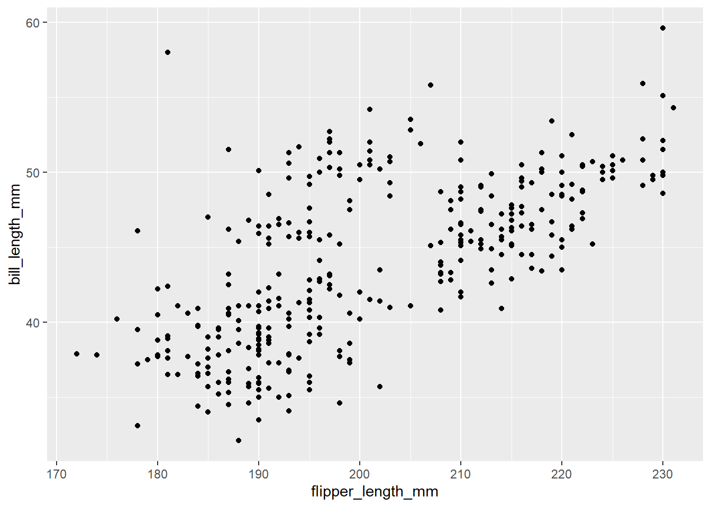
Use geom_smooth() to add a layer of smooth curve. Specify method = "lm" to fit a linear model.
ggplot(
data = penguins,
mapping = aes(x = flipper_length_mm, y = bill_length_mm)
) + geom_point() +
geom_smooth(method = "lm")`geom_smooth()` using formula = 'y ~ x'Warning: Removed 2 rows containing non-finite outside the scale range
(`stat_smooth()`).Warning: Removed 2 rows containing missing values or values outside the scale range
(`geom_point()`).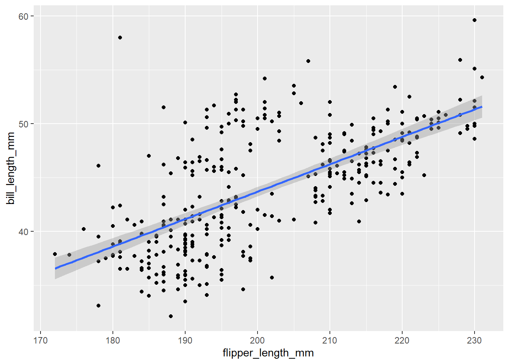
What does the relationship between flipper length and bill length look like?
As flipper length increases, so does bill length
There seems to be three clusters
Recall we have three species!
The relationship between flipper length and bill length differ by species.
Factors are used for categorical variables, variables that have a fixed and known set of possible values.
class(penguins$species)[1] "factor"levels(penguins$species)[1] "Adelie" "Chinstrap" "Gentoo" We have used the x-axis to represent the flipper length and the y-axis to represent the bill length. How can we represent another variable on a canvas? The z-axis?
We can use different colors for different categories!
ggplot(
data = penguins,
mapping = aes(x = flipper_length_mm, y = bill_length_mm, color = species)
) +
geom_point() +
geom_smooth(method = "lm")`geom_smooth()` using formula = 'y ~ x'Warning: Removed 2 rows containing non-finite outside the scale range
(`stat_smooth()`).Warning: Removed 2 rows containing missing values or values outside the scale range
(`geom_point()`).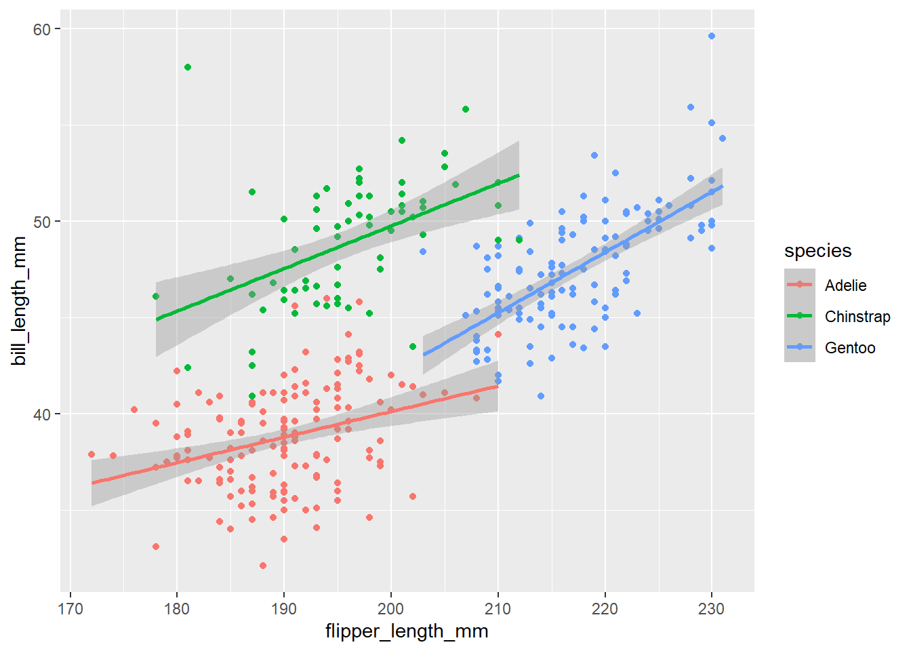
Hooray!
When a categorical variable (factor) is mapped to an aesthetic, ggplot will automatically assign a unique value of the aesthetic (here a unique color) to each unique level of the variable (each of the three species), a process known as scaling.
Instead of only one regression line, now we get three, each with corresponding color. The legend has been automatically updated too.
It’s generally not a good idea to represent information using only colors on a plot, as people perceive colors differently due to color blindness or other color vision differences. Therefore, in addition to color, we can also map species to the shape aesthetic.
ggplot(
data = penguins,
mapping = aes(x = flipper_length_mm, y = bill_length_mm,
color = species, shape = species)
) +
geom_point() +
geom_smooth(method = "lm")`geom_smooth()` using formula = 'y ~ x'Warning: Removed 2 rows containing non-finite outside the scale range
(`stat_smooth()`).Warning: Removed 2 rows containing missing values or values outside the scale range
(`geom_point()`).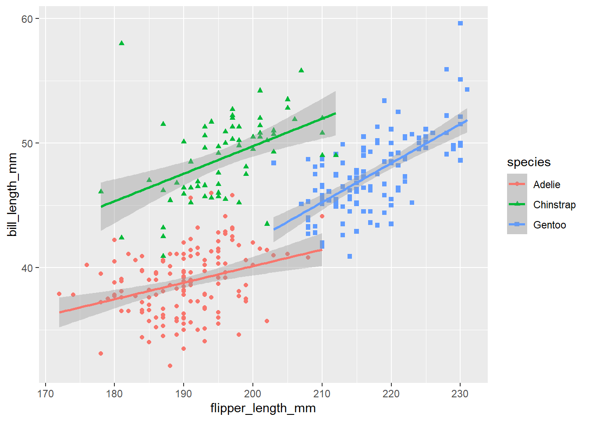
Use the labs() function in a new layer. The default canvas theme is not the best, and we’d better replace it.
ggplot(
data = penguins,
mapping = aes(x = flipper_length_mm, y = bill_length_mm,
color = species, shape = species)
) +
geom_point() +
geom_smooth(method = "lm") +
labs(
title = "Flipper and bill length",
subtitle = "Dimensions for Adelie, Chinstrap and Gentoo Penguins at Palmer Station LTER",
x = "Flipper length (mm)",
y = "Bill length (mm)",
color = "Penguin species",
shape = "Penguin species"
) +
theme_bw()`geom_smooth()` using formula = 'y ~ x'Warning: Removed 2 rows containing non-finite outside the scale range
(`stat_smooth()`).Warning: Removed 2 rows containing missing values or values outside the scale range
(`geom_point()`).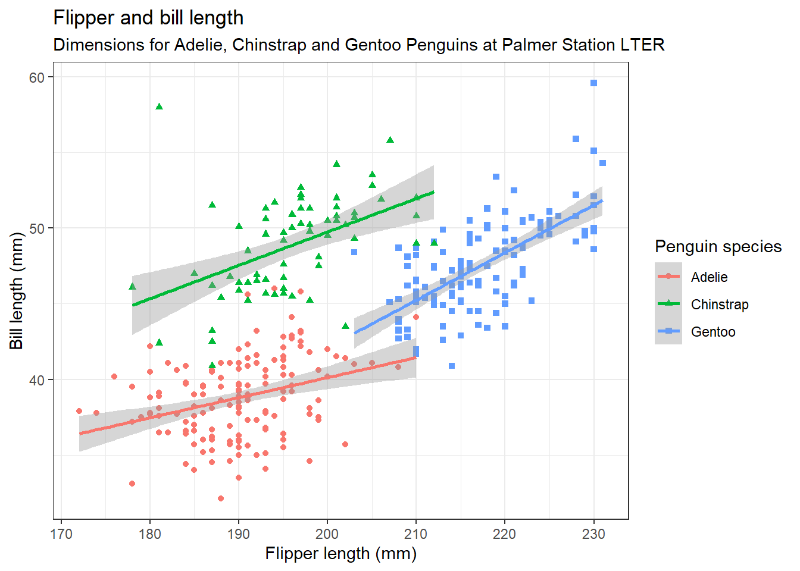
Type theme_ and wait for auto-completion suggestions. Pick your favorite theme.
Use scale_color_manual() to specify colors manually. The values will be matched in order of the factor species, which is ordered alphabetically.
When a categorical variable (factor) is mapped to an aesthetic, ggplot will automatically assign a unique value of the aesthetic (here a unique color) to each unique level of the variable (each of the three species), a process known as scaling.

geom_point(size = 3, alpha = 0.8) adjusts the size and the transparency of points.
ggplot(
data = penguins,
mapping = aes(x = flipper_length_mm, y = bill_length_mm,
color = species, shape = species)
) +
geom_point(size = 3, alpha = 0.8) +
geom_smooth(method = "lm") +
labs(
title = "Flipper and bill length",
subtitle = "Dimensions for Adelie, Chinstrap and Gentoo Penguins at Palmer Station LTER",
x = "Flipper length (mm)",
y = "Bill length (mm)",
color = "Penguin species",
shape = "Penguin species"
) +
theme_bw() +
scale_color_manual(values = c("darkorange","purple","cyan4")) `geom_smooth()` using formula = 'y ~ x'Warning: Removed 2 rows containing non-finite outside the scale range
(`stat_smooth()`).Warning: Removed 2 rows containing missing values or values outside the scale range
(`geom_point()`).Pick your favorite colors. You may use the name with a suffix number or use the hex of the color.
"darkorange"
"darkorange1"
"darkorange2"
"darkorange3"
"darkorange4"
"#ff4e02"First, save your painting in a variable called gg:
gg <- ggplot(
data = penguins,
mapping = aes(x = flipper_length_mm, y = bill_length_mm,
color = species, shape = species)
) +
geom_point(size = 3, alpha = 0.8) +
geom_smooth(method = "lm") +
labs(
title = "Flipper and bill length",
subtitle = "Dimensions for Adelie, Chinstrap and Gentoo Penguins at Palmer Station LTER",
x = "Flipper length (mm)",
y = "Bill length (mm)",
color = "Penguin species",
shape = "Penguin species"
) +
theme_bw() +
scale_color_manual(values = c("darkorange","purple","cyan4")) ggsave(
filename = "my_ggplot.png",
plot = gg
)Saving 7 x 5 in image
`geom_smooth()` using formula = 'y ~ x'Warning: Removed 2 rows containing non-finite outside the scale range
(`stat_smooth()`).Warning: Removed 2 rows containing missing values or values outside the scale range
(`geom_point()`).# install.packages("GGally")
library(GGally)
penguins %>%
select(species, body_mass_g, ends_with("_mm")) %>%
GGally::ggpairs(aes(color = species)) +
scale_colour_manual(values = c("darkorange","purple","cyan4")) +
scale_fill_manual(values = c("darkorange","purple","cyan4")) +
theme_minimal()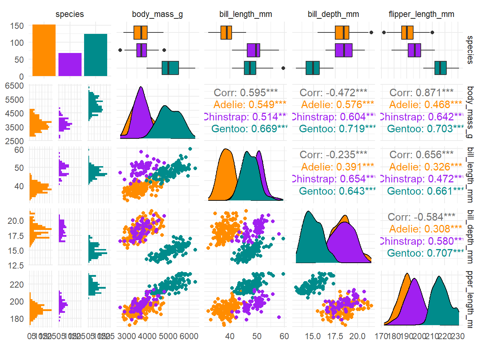